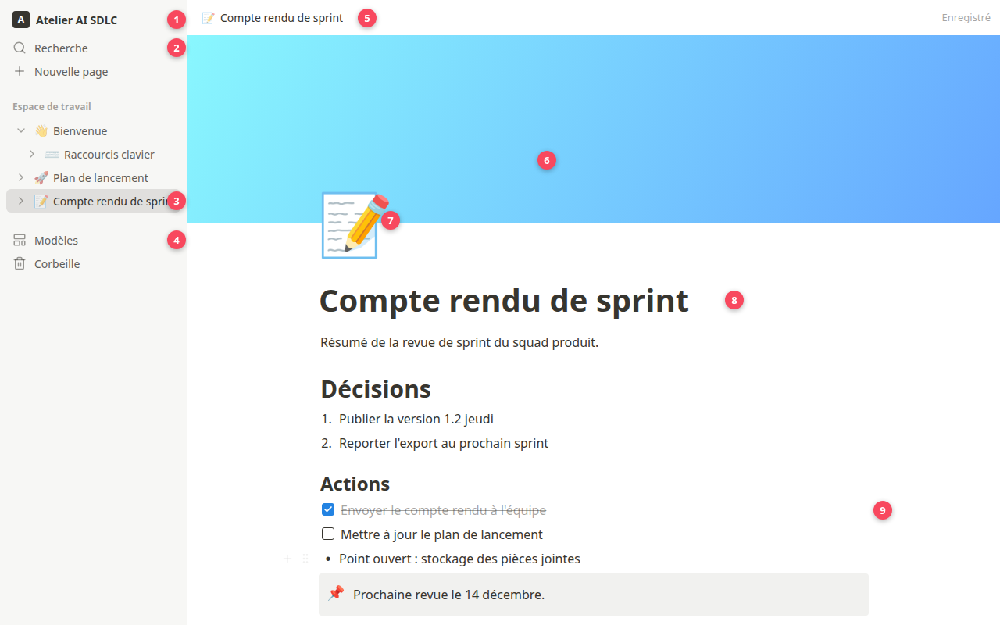
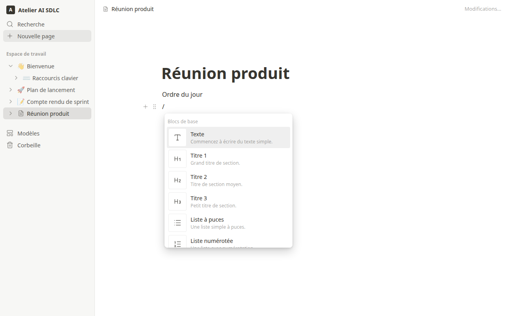
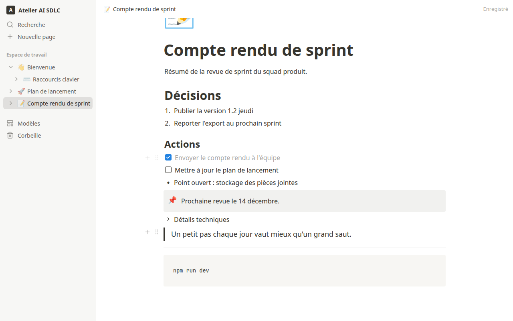
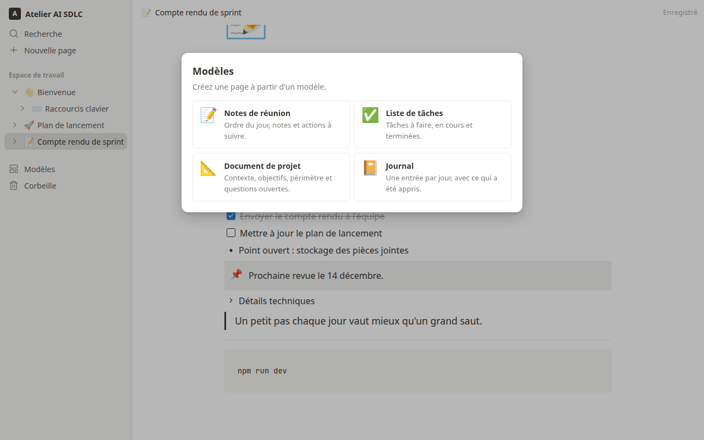
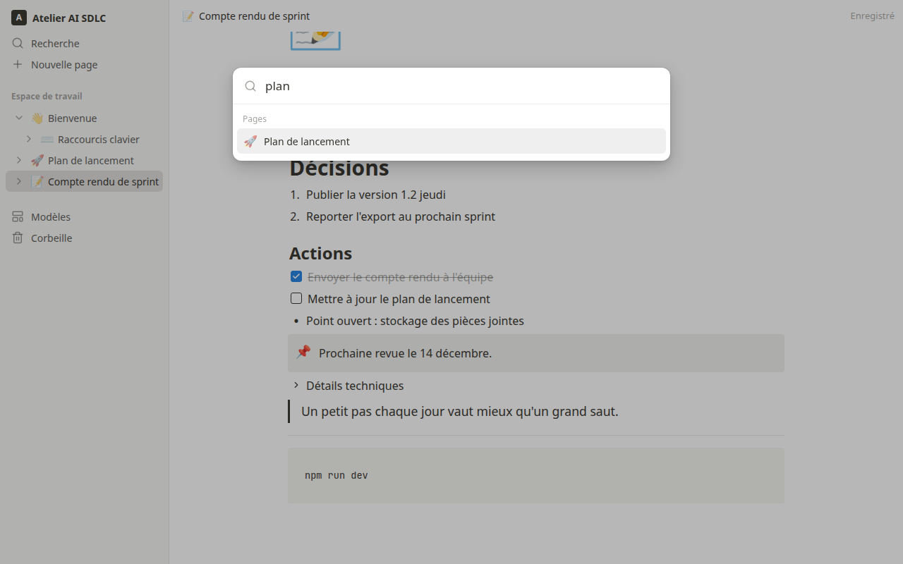
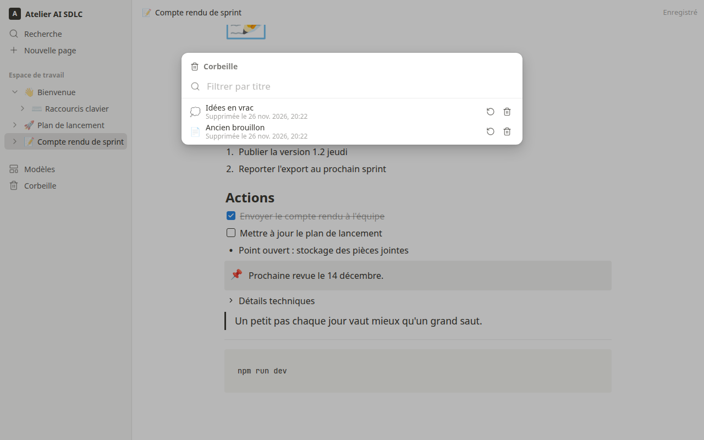

![Devoteam]()
Notre produit existant,
« notion like ».
Pendant cinq jours, vous faites évoluer un vrai produit, déjà en ligne. Cette page le présente : ce qu’il sait faire, comment il est construit, et ce qu’il ne sait pas encore faire.
Le produit · fiche rapide
Un éditeur de pages imbriquées, fait de blocs
En ligne : notion-like-theta.vercel.app · sans compte, sans commentaires
À lire une fois, à garder ouvert toute la semaine
Les jours 1 à 4 s’appuient sur le produit tel qu’il est aujourd’hui, le jour 5 le modifie. Dix minutes de lecture et de prise en main évitent de proposer des stories qui existent déjà, ou qui ne tiennent pas compte de l’existant.
Pourquoi cette page
Dans un vrai projet, on ne part presque jamais d’une page blanche : on fait évoluer un produit qui a déjà des utilisateurs, des écrans, des règles et du code. L’atelier reproduit cette situation. Notre produit s’inspire des usages de Notion : un espace de travail où l’on écrit des pages, que l’on range dans une arborescence, et dont le contenu est fait de blocs.
Il est volontairement simple et incomplet. Il sait faire assez de choses pour paraître réel, et il lui manque assez de choses pour que chaque participant trouve de quoi l’enrichir. Il n’a ni connexion, ni compte, ni commentaires, et il n’est ni une copie ni un produit de Notion : les icônes viennent de la bibliothèque libre Lucide, et aucun logo ni élément de Notion n’est repris.
- Vous êtes utilisateur : vous apprenez à vous en servir, pour savoir de quoi parlent vos stories.
- Vous êtes product owner ou analyste : vous écrivez des stories qui citent des écrans et des comportements qui existent vraiment.
- Vous êtes développeur ou testeur : vous savez où le code vit et ce que vos tests doivent protéger.
Le produit en bref
| Question | Réponse |
|---|---|
| Qu’est-ce que c’est ? | Un éditeur de pages imbriquées (une page peut contenir des sous-pages), dont le contenu est une suite de blocs : titres, listes, cases à cocher, citations, code… |
| Où le voir ? | https://notion-like-theta.vercel.app, ouvert à tous, sans connexion. |
| Qui l’utilise ? | Une seule catégorie d’utilisateur, anonyme. Il n’existe ni compte, ni rôle, ni droit d’accès : toute personne qui a l’adresse voit et modifie les mêmes pages. |
| Où sont les données ? | Dans une base Postgres (Neon en ligne). Chaque page est une ligne, ses blocs sont enregistrés avec elle. |
| Comment est-il construit ? | TypeScript de bout en bout, un serveur sans framework et un front sans framework. Aucune clé, aucune donnée personnelle. |
| Où est le code ? | Dossier application-notion-like/ du dépôt de la semaine. Son README détaille l’architecture ; l’animateur du jour 5 indique le dépôt de travail pour l’implémentation. |
| Comment est-il publié ? | Sur Vercel : chaque modification fusionnée dans main met le site à jour, et chaque branche a son aperçu. |
Visite guidée de l’écran
Ouvrez le produit en parallèle. L’écran se compose d’une barre latérale à gauche et de la page à droite. Les repères numérotés ci-dessous sont repris dans le tableau.

| Repère | Élément | À quoi il sert |
|---|---|---|
| 1 | En-tête d’espace de travail | Nom de l’espace (« Atelier AI SDLC »). Il est fixe : il n’y a qu’un seul espace. |
| 2 | Recherche et Nouvelle page | Recherche (aussi Ctrl + K, ou ⌘ + K) cherche dans les titres des pages, sans tenir compte des accents ni des majuscules. Sans saisie, elle propose les pages modifiées récemment. Nouvelle page crée une page à la racine. |
| 3 | Arborescence « Espace de travail » | Toutes les pages, rangées en arbre. Flèche pour déplier ou replier, emoji devant chaque titre. Au survol d’une ligne : + ajoute une sous-page, la poubelle place la page dans la corbeille. Les pages dépliées sont mémorisées dans votre navigateur. |
| 4 | Modèles et Corbeille | Modèles : quatre pages types à copier. Corbeille : les pages supprimées, que l’on restaure ou supprime pour de bon. |
| 5 | Fil d’Ariane et état d’enregistrement | Chemin de la page (chaque étape est cliquable) et mention « Enregistrement… » puis « Enregistré ». Il n’y a pas de bouton « Enregistrer » : tout est enregistré automatiquement environ une demi-seconde après la dernière frappe. |
| 6 | Couverture | Bandeau décoratif, au choix parmi six dégradés. Au survol : « Changer la couverture » ou « Retirer ». |
| 7 | Icône de la page | Un emoji, choisi dans une grille (avec « Aléatoire » et « Retirer »). Sans icône, la page affiche une icône de fichier. Au survol de l’en-tête de page, « Ajouter une icône » et « Ajouter une couverture » apparaissent. |
| 8 | Titre | Grand titre modifiable. Une page sans titre s’affiche « Sans titre ». Entrée passe au premier bloc. |
| 9 | Blocs | Le contenu. Au survol d’un bloc, deux poignées apparaissent à sa gauche : + (ajouter un bloc dessous) et ⋮⋮ (glisser pour déplacer, cliquer pour le menu). |
Les blocs et leurs raccourcis
Un bloc se crée en tapant « / » dans une ligne vide, puis en choisissant dans le menu (flèches, Entrée, ou clic). Taper après le « / » filtre la liste (« / titre », « / case »). Les raccourcis Markdown transforment une ligne au moment où l’on tape le motif au tout début.

| Bloc | Raccourci | Comportement |
|---|---|---|
| Texte | — | Bloc par défaut. |
| Titre 1, 2, 3 | # · ## · ### | Trois niveaux de titre de section. |
| Liste à puces | - ou * | Entrée crée une puce de plus ; Entrée sur une puce vide revient à du texte. |
| Liste numérotée | 1. ou 1) | La numérotation suit les éléments consécutifs et repart à 1 après un autre bloc. |
| Case à cocher | [] ou [ ] | Cliquer coche la case ; le texte est alors barré et grisé. |
| Bascule | — | Une ligne avec une flèche qui déplie ou replie un texte masqué. |
| Citation | > | Trait vertical à gauche, texte un peu plus grand. |
| Encadré | — | Texte sur fond gris avec une icône ; cliquer l’icône en change (six choix). |
| Séparateur | --- | Ligne horizontale. Un bloc de texte vide est ajouté dessous. |
| Code | ``` + espace | Police à chasse fixe ; Entrée ajoute une ligne dans le bloc au lieu d’en créer un. |

Organiser et réordonner les blocs
- Glisser-déposer la poignée ⋮⋮ vers un autre endroit ; un trait bleu indique où le bloc tombera.
- Menu ⋮⋮ (un clic) : Supprimer, Dupliquer, Monter, Descendre, et « Transformer en » un autre type.
- Clavier : Ctrl + Maj + ↑ ou ↓ (⌘ sur Mac) déplace le bloc ; ↑ et ↓ aux bords d’un bloc passent au voisin ; Retour arrière au début d’un bloc le transforme en texte, puis le fusionne avec le précédent.
- Le texte est toujours du texte brut : un collage de texte formaté perd sa mise en forme.
Pages, sous-pages et corbeille
Créer et ranger
- Nouvelle page crée une page à la racine ; le + d’une ligne de l’arborescence crée une sous-page. Il n’y a pas de limite de profondeur affichée.
- Une page neuve est vide, sans titre, et s’ouvre directement sur le titre.
- Les pages s’affichent dans l’ordre où elles ont été créées. Il n’est pas possible de les réordonner ni de les déplacer sous un autre parent.
- Les modèles (Notes de réunion, Liste de tâches, Document de projet, Journal) créent une page déjà remplie, avec son icône. Elle est ensuite indépendante du modèle.

Rechercher
La recherche porte sur les titres uniquement, pas sur le contenu des blocs. Les résultats indiquent le chemin de la page quand elle est dans une sous-page.

La corbeille : les règles à connaître
| Action | Ce qui se passe |
|---|---|
| Placer une page dans la corbeille | La page et toutes ses sous-pages quittent l’arborescence. Dans la corbeille, seule la page supprimée est listée, ses sous-pages la suivent. |
| Ouvrir une page de la corbeille | Elle s’affiche en lecture seule, sous un bandeau « Cette page est dans la corbeille » avec « Restaurer la page » et « Supprimer définitivement ». |
| Restaurer | La page et ses sous-pages reviennent à leur place. Si le parent d’une sous-page est lui-même dans la corbeille, la sous-page restaurée remonte à la racine. |
| Supprimer définitivement | Possible uniquement depuis la corbeille, après confirmation. La page et ses sous-pages sont effacées, sans retour possible. |
| Ajouter une sous-page à une page supprimée | Refusé : le parent doit exister et ne pas être dans la corbeille. |

Trois pages d’exemple
Un espace neuf contient « Bienvenue » (qui montre chaque type de bloc), sa sous-page « Raccourcis clavier », et « Plan de lancement ». Elles servent de repères, mais n’importe qui peut les modifier ou les supprimer.
Prise en main en dix minutes
Comptez dix minutes. Aucune installation : un navigateur suffit.
Exercice · Votre première page
- Ouvrez notion-like-theta.vercel.app et lisez la page « Bienvenue ».
- Cliquez sur Nouvelle page, tapez un titre commençant par vos initiales (par exemple « VC · Essai »), puis Entrée.
- Ajoutez une icône et une couverture depuis l’en-tête de la page.
- Tapez
/, choisissez Titre 1, écrivez un titre. Faites de même avec une Case à cocher, puis essayez les raccourcis#,-et[]. - Déplacez un bloc avec la poignée ⋮⋮, puis avec Monter / Descendre dans son menu.
- Ajoutez une sous-page depuis la ligne de votre page dans la barre latérale, puis retrouvez-la avec la recherche.
- Placez votre page dans la corbeille, ouvrez la corbeille, restaurez-la, puis supprimez-la définitivement.
- Rechargez la page du navigateur : vos modifications (tant qu’elles n’ont pas été supprimées) sont toujours là.
Un espace partagé, public et sans compte
L’espace en ligne est partagé par tous ceux qui ouvrent l’adresse : vous verrez les pages des autres, et ils verront les vôtres. N’y saisissez aucune donnée personnelle ni confidentielle, préfixez vos pages de vos initiales, et supprimez-les en fin d’essai. Si deux personnes modifient la même page en même temps, la dernière sauvegarde l’emporte.
Ce que le produit ne fait pas
Voici ce que le produit ne fait pas aujourd’hui. Ce n’est pas une liste de bugs : ce sont des choix de départ, et la matière première de vos signaux (jour 1) et de vos stories (jour 2). Avant de proposer une idée, vérifiez qu’elle ne figure pas déjà dans les sections précédentes.
| Ce qui manque | Ce que cela donne aujourd’hui |
|---|---|
| Comptes et connexion | Aucun utilisateur identifié. Impossible de savoir qui a écrit ou modifié quoi, de réserver une page ou de limiter l’accès. |
| Partage et droits | Pas de pages privées, pas de lecture seule, pas d’invitation : tout est visible et modifiable par tous. |
| Commentaires | Aucun moyen de commenter une page ou un passage, d’y répondre ou de mentionner quelqu’un. Il n’existe pas non plus d’emplacement prévu à l’écran pour cela. |
| Collaboration en temps réel | Chaque page est enregistrée en entier ; en cas de modification simultanée, la dernière sauvegarde écrase l’autre, sans alerte. |
| Mise en forme du texte | Texte brut seulement : pas de gras, d’italique, de lien, de mention, de couleur. |
| Images et fichiers | Pas de bloc image, pas de pièce jointe. La couverture se choisit parmi six dégradés, sans image personnelle. |
| Recherche dans le contenu | La recherche ne regarde que les titres des pages. |
| Organisation des pages | Pas de réordonnancement ni de déplacement de pages dans l’arborescence, pas de favoris. |
| Historique | Pas de versions anciennes à retrouver, pas de journal des modifications. |
| Import, export, impression | Aucun export (Markdown, PDF) ni import. |
| Mobile | La barre latérale devient un tiroir sur petit écran, mais les poignées « + » et ⋮⋮ des blocs ne sont pas disponibles. |
| Notifications | Aucune : ni message, ni courriel, ni indicateur de nouveauté. |
Limites techniques à respecter dans vos critères
Un titre de page compte au plus 200 caractères, un bloc au plus 10 000, une page au plus 1 000 blocs, et l’espace au plus 1 000 pages. Les types de blocs autorisés sont les douze de la section précédente : tout autre type est refusé par le serveur.
Le vocabulaire du produit
Employez ces mots dans vos epics, stories et critères d’acceptation : les agents et vos collègues s’en serviront pour retrouver le bon écran ou le bon code.
| Terme | Définition |
|---|---|
| Espace de travail | L’ensemble des pages, affiché dans la barre latérale. Il n’y en a qu’un. |
| Page | L’unité de contenu : un titre, une icône et une couverture facultatives, et des blocs. |
| Sous-page | Une page rangée sous une autre. Elle suit son parent dans la corbeille. |
| Bloc | Une ligne de contenu d’un type donné (texte, titre, liste, case à cocher…). |
| Menu « / » | La liste des types de blocs qui s’ouvre quand on tape « / ». |
| Poignée | Les deux boutons à gauche d’un bloc, au survol : « + » (ajouter) et ⋮⋮ (déplacer, menu). |
| Icône | L’emoji d’une page, affiché dans l’arborescence, le fil d’Ariane et en grand sur la page. |
| Couverture | Le bandeau en haut d’une page, choisi parmi six dégradés. |
| Modèle | Une page type, copiée pour créer une nouvelle page. |
| Corbeille | Le lieu où vont les pages supprimées, avant une suppression définitive. |
| Fil d’Ariane | Le chemin de la page en haut de l’écran, de la racine à la page courante. |
Comment l’utiliser chaque jour
| Jour | Ce que le produit vous apporte | Ce que vous en faites |
|---|---|---|
| Jour 1 · Discover | Un produit réel à observer, avec des manques évidents (section « Ce que le produit ne fait pas »). | Vous partez de ce que vous constatez en l’utilisant pour nourrir vos signaux, puis votre epic : le problème, pour qui, et la réussite attendue. |
| Jour 2 · Specify | Le vocabulaire et les règles d’aujourd’hui. | Vous écrivez des stories qui disent ce qui change par rapport à l’existant, avec le vocabulaire du produit et des critères d’acceptation qui ne contredisent pas les règles actuelles (par exemple celles de la corbeille). |
| Jour 3 · Prototype | Un écran et des repères de style (section « Repères de style »). | Vous dessinez les nouveaux écrans comme s’ils faisaient partie du produit : même barre latérale, mêmes espacements, mêmes icônes. |
| Jour 4 · Quality | Des comportements existants à protéger. | Vous testez la nouveauté et vérifiez que l’existant ne casse pas : corbeille avec sous-pages, titre vide, réordonnancement des blocs, rechargement. |
| Jour 5 · Code | Une base de code courte et organisée (section « Côté technique »). | Vous la modifiez par petits pas, avec des migrations additives et des tests qui passent. |
Trois réflexes à adopter
- Vérifier avant de proposer : ouvrez le produit et regardez si la fonctionnalité existe, même en partie.
- Décrire le changement, pas le produit : une story précise ce qui est ajouté ou modifié, et laisse intact tout le reste.
- Citer l’endroit : « dans la barre latérale », « dans le menu ⋮⋮ d’un bloc », « sur la page, sous le titre ». Les agents du kit relient la story au code et au design avec ces repères.
Repères de style pour le prototype
Le produit reprend l’allure sobre de Notion. Un écran nouveau doit se fondre dedans. Voici les repères à utiliser dans Figma.
#37352f
Barre latérale #f7f7f5
Survol 55,53,47 · 8 %
Accent #2383e2
Danger #eb5757
Encadré #f1f1ef
| Élément | Repère |
|---|---|
| Police | Police système (Segoe UI, San Francisco ou équivalent), corps à 16 px. |
| Titre de page | 40 px, gras, texte #37352f. |
| Largeur du contenu | Environ 708 px, centré ; barre latérale de 240 px. |
| Survols | Discrets : un voile gris très léger, jamais une couleur vive. L’accent bleu est réservé aux cases cochées, aux sélections et au bouton principal. |
| Icônes | Bibliothèque libre Lucide (traits fins, arrondis), plus des emoji pour les pages. Pas de logo ni d’élément propriétaire de Notion. |
| Fenêtres et menus | Coins arrondis, ombre légère, fond blanc ; fenêtre centrée pour la recherche, les modèles et la corbeille. |
| Langue | Interface en français, avec des libellés courts (« Nouvelle page », « Corbeille », « Restaurer »). |
Côté technique
Cette section s’adresse surtout au jour 5, mais elle aide aussi à écrire des stories réalistes. Le README du dossier fait foi : application-notion-like/README.md.
Lancer en local
cd application-notion-like
npm install
npm run dev # http://localhost:3000, base locale créée au premier démarrage
npm test # tests, avec une base jetable en mémoire
npm run typecheck # vérification des types, serveur et frontIl faut Node 20 ou plus (testé avec la version 22). En local, la base est un Postgres embarqué (PGlite) dans le dossier data/ : supprimez-le pour repartir d’un espace neuf.
Où se trouve quoi
| Dossier | Contenu |
|---|---|
src/shared/ | Le modèle de données (types.d.ts) et la validation des titres, icônes, couvertures et blocs (validation.ts), partagés par le serveur et les tests. |
src/server/ | Les routes de l’API (handler.ts), les règles métier et le SQL (pages.ts) et l’accès à la base (db.ts). |
src/client/ | L’interface : écran de page (app.ts), barre latérale (sidebar.ts), éditeur de blocs (editor.ts), règles de l’éditeur (shortcuts.ts), fenêtres (modals.ts), modèles (templates.ts) et icônes (icons.ts). |
public/ | index.html et style.css, où se trouvent les couleurs et les espacements. |
migrations/ | Le schéma de la base, en fichiers SQL numérotés. |
tests/ | Les tests : modèle de page, API et règles de l’éditeur. |
api/, vercel.json | Les fonctions et la configuration utilisées pour la publication sur Vercel. |
Le modèle de données
Une page (table pages) porte : un title, une icon (emoji) et une cover (une des six couvertures), un parent_id (la page parente, vide à la racine), une position (rang parmi les pages sœurs), un trashed_at (date de mise à la corbeille, vide si la page est active) et ses blocks. Les blocs forment un tableau ordonné ; chacun a un id, un type et un text, plus checked pour une case, body pour une bascule et icon pour un encadré.
L’API
| Méthode | Route | Effet |
|---|---|---|
| GET | /api/pages | Pages actives (identifiant, titre, icône, parent, rang, dates). |
| GET | /api/pages?trashed=1 | Pages dans la corbeille. |
| POST | /api/pages | Crée une page ; titre, blocs, icône, couverture et parent sont facultatifs. |
| GET | /api/pages/:id | Lit une page avec ses blocs. |
| PUT | /api/pages/:id | Modifie titre, blocs, icône ou couverture ; trashed: true met la page et ses sous-pages à la corbeille, trashed: false les restaure. |
| DELETE | /api/pages/:id | Supprime définitivement une page de la corbeille et ses sous-pages ; refusé (409) si elle n’y est pas. |
Règles de l’équipe
- Migrations additives : pour changer la base, ajoutez un nouveau fichier
migrations/NNN_nom.sqlqui crée des tables ou ajoute des colonnes. Ne modifiez jamais une migration déjà appliquée. - Requêtes paramétrées : toutes les requêtes passent par la fonction
sql(texte, paramètres), valeurs en$1,$2… - Aucun secret dans le dépôt : l’adresse de la base en ligne n’y figure jamais.
- Où ajouter une fonctionnalité : données → une migration et
types.d.ts; règles et SQL → un module à côté depages.ts; routes →handler.ts; écran →src/client/; test → un fichiertests/*.test.ts.